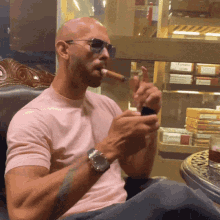

Andrew Tate
World Champion Memelord & Kickboxer Extraordinaire

Objective
To dominate the virtual ring with knockout memes and real-life kicks, leaving the internet laughing and opponents questioning their life choices.
Education
Chuckle University
- Bachelor of Arts in Hilarious High Kicks, Majoring in Memetic Martial Arts
Professional Experience
Kickboxing Comedian | Global Championship Circuit
- Knocked out opponents in the ring and audiences with laughter outside it.
- If life gives you lemons, I make lemonade and then kick it into the next galaxy.
Meme Mercenary | Cyber Laughter Legion
- Deployed memes sharper than my roundhouse kicks, turning haters into fans.
- My memes hit harder than a championship uppercut.
Self-Help Humorist | Mindset Makeover Magician
- Taught life lessons with a side of laughter, proving that a good joke is the best medicine.
- My positive vibes are more contagious than a viral cat video.
Skills
Can knock out negativity with a single punchline.
Master of the meme dojo, specializing in comedic combat.
Possesses the uncanny ability to turn setbacks into comeback stories.
Notable Achievements:
- Awarded the "Joker Juggernaut" for Funniest Knockout Punchlines.
- Crowned "King of the Ring and Comedy" at the Humorous Martial Arts Gala.
Others